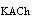

A.心交感和交感缩血管紧张减弱
B.颈动脉体受刺激减弱
C.心迷走紧张增强
D.压力感受器传入冲动增多
E.血压升高
参考答案：E
题目解析：颈总动脉末端和颈内动脉起始处的膨大部分存在颈动脉窦，其管壁的外膜下有丰富的感觉神经末梢，一般称为压力感受器，与血压调节功能有关。压力感受器的适宜刺激是管壁的机械牵张。在夹闭颈总动脉时，相应的颈总动脉末端的颈动脉窦内的压力降低，感觉神经传人的降低血压的神经冲动减少，使交感紧张和交感缩血管活动增强，血压升高。因此全身动脉血压上升。故选E。
A.快速射血期
B.等容收缩期
C.缓慢射血期
D.等容舒张期
E.快速充盈期
参考答案：B
题目解析：心房进入舒张期后不久，心室开始收缩，心室内压力开始升高。当超过房内压时，心室内血液出现由心室向心房反流的倾向，但这种反流正好推动房室瓣，使之关闭，血液因而不至于倒流。这时，室内压尚低于主动脉压，半月瓣仍然处于关闭状态，心室成为一个封闭腔。因血液是不可压缩的液体，心室肌的强烈收缩导致室内压急剧升高，以致主动脉瓣开启的这段时期，称为等容收缩相。其特点是室内压大幅度升高，且升高速率最快。故选B。
A.每搏输出量
B.左、右心室输出的总血液量
C.每分钟左心室所泵出的血量
D.心房进入心室的血量
E.每分钟两心房进入心室的血量
参考答案：C
题目解析：心输出量是指每分钟左心室或右心室射入主动脉或肺动脉的血量（又称心排血量）。左、右心室的输出量基本相等。故选C。
A.是指心脏机械活动周期
B.如心率为75次/分，心动周期历时0.8秒
C.房缩期为0.1秒，室缩期为0.3秒，全心舒张期为0.4秒
D.心率增快，心动周期缩短
E.心动周期缩短时，收缩期与舒张期均等缩短
题目解析：心动周期是指心脏一次收缩和舒张构成的一个机械活动周期。心动周期是心率的倒数，如果心率为每分钟75次，则心动周期持续0.8秒。在心房的活动周期中，先是左、右心房收缩，持续约0.1秒，继而心房舒张，持续约0.7秒，在心室的活动周期中，也是左、右心室先收缩，持续约0.3秒，随后心室舒张，持续约0.5秒，当心房收缩时，心室仍处于舒张状态，心房收缩结束后不久，心室开始收缩。心室舒张期的前0.4秒，心房也处于舒张状态，这一时期称为全心舒张期。心率加快时，心动周期缩短，收缩期和舒张期都相应缩短，而舒张期缩短的程度更大。
A.低常期较长
B.有效不应期特别长
C.相对不应期短
D.超常期特别长
E.绝对不应期短
题目解析：从0期去极化开始到复极3期膜电位达-55mV这段时间，无论给予多大的刺激，心肌细胞都不发生反应，即兴奋性为零（因为Na通道处于失活状态），此期称为绝对不应期。随之膜电位由-55mV恢复到-60mV的时间里，给予强刺激，可引起局部兴奋，但不能暴发动作电位（此时Na 通道刚刚开始复活），此期为局部反应期。将这两期合称为有效不应期。在此期间由于存在平台期，从而使心肌的有效不应期相对于神经细胞和骨骼肌细胞来说特别长。故选B。
A.搏出量/体重
B.搏出量/体表面积
C.搏出量/心室舒张末期容积
D.心输出量/体重
E.心输出量/心室舒张末期容积
题目解析：正常成年人左心室舒张末期的容积约为125ml，收缩末期容积约55ml，两者的差值即搏出量为70ml。可见，心室在每次射血时，未将心室内充盈的血液全部射出。搏出量占心室舒张末期容积的百分比称为射血分数。故本题选C。
A.血压升高，心率加快
B.血压降低，心率加快
C.血压升高，心率减慢
D.血压降低，心率减慢
E.心率和血压均不变
题目解析：当失血过多的时候，体内循环血量降低，导致血液对血管壁的压力下降，血压降低，对主动脉弓和颈动脉窦压力感受器刺激减小，神经传入冲动减少，交感紧张性增强，心率加快。故选B。
A.心肌是功能合胞体
B.兴奋传导有房室延搁
C.窦房结对潜在起搏点有抑制作用
D.收缩期较短
E.有效不应期特别长
题目解析：心动周期中，心肌细胞的平台期特别长，相应的有效不应期也长，当下一次冲动传来时，心肌还处于有效不应期，所以不会在原有收缩的基础上再次产生动作电位，也就不会像骨骼肌一样发生强直收缩。故选E。
A.收缩全身阻力血管
B.收缩容量血管
C.促进交感神经末梢释放去甲肾上腺素
D.促进下丘脑释放血管升压素
E.促进肾上腺皮质释放醛固酮
参考答案：D
题目解析：血管紧张素Ⅱ的作用有：①直接使全身微动脉收缩，微动脉为阻力血管，因此A正确。血管紧张素Ⅱ也可促进静脉收缩，静脉为容量血管，故B正确。②作用于交感神经末梢，使其释放去甲肾上腺素，故C正确。③刺激肾上腺皮质合成释放醛固酮，故E正确。④促进神经垂体释放血管升压素，后者由下丘脑视上核、室旁核产生，并经轴质运输到神经垂体末梢储存并释放，故D不正确。故选D。
A.心功能不全，血容量正常
B.血容量不足
C.容量血管过度收缩
D.心功能不全或血容量相对过多
E.心功能不全或血容量不足
题目解析：中心静脉压是指胸腔大静脉或右心房内的压力。正常值为0.39～1.18kPa(4～12cmHO)。其高低取决于心脏射血能力和静脉回流速度。当中心静脉压低的时候提示血量不足，而血压低提示血容量不足或者是心功能不全。故选B。
E.心率和血压均无明显变化
参考答案：A
题目解析：肾上腺髓质激素主要为肾上腺素，是α受体和β受体的强激动剂，激动α受体可强烈缩血管，激动β受体可对心脏产生正性变时、变力、变传导。故选A。
A.等容收缩期初
B.等容收缩期末
C.心室射血期初
D.等容舒张期初
E.等容舒张期末
题目解析：二尖瓣（左房室瓣）开放的开始，意味着心室充盈血液的开始。从心动周期的几个时期分析，只能是在快速充盈期初或等容舒张期末。
A.静脉回心血量减少
B.循环血量减少
C.外周阻力增加
D.心率突然减慢
E.心率突然增快
题目解析：由下蹲位突然起立可导致大量的血液积滞在下肢，回心血量过少导致心输出量不足，引起晕厥。
A.钾离子通透性降低
B.钾离子通透性增高
C.钙离子通透性增高
D.钠离子通透性增高
E.氯离子通透性增高
题目解析：心迷走神经兴奋时末梢释放的乙酰胆碱与窦房结细胞的M受体结合后，能激活一种钾离子通道（I通道），钾离子通透性增高，钾离子外流增多，使最大复极电位变得更负，以致自动去极化达到阈电位所需的时间延长，从而使窦房结兴奋的频率变低，导致心率减慢。
A.心肌收缩能力增强
B.肌节的初长度增加
C.横桥联结的数目增多
D.心室舒张末期容积增大
E.心肌收缩能力减弱
题目解析：心脏的每搏输出量取决于前负荷、心肌收缩能力和后负荷三方面的影响。其中，等长调节是与心肌的初长度变化无关的，不依赖于前、后负荷而改变其力学活动的一种内在特性，是通过改变心肌细胞兴奋一收缩偶联各个环节而影响心肌收缩能力而实现的。
A.它是功能上的合胞体
C.具有自动节律性
D.呈\'全或无\'收缩
E.有效不应期短
题目解析：心肌细胞不同于骨骼肌细胞，其有效不应期特别长(200～300ms)，相当于心室肌收缩活动的整个收缩期及舒张早期，保证了心室肌在收缩期和舒张早期，不能接受刺激产生第二次兴奋和收缩，使心肌不会发生完全强直收缩，故答案是B。由于心房肌或心室肌均为功能上的合胞体，故收缩是\'全或无\'的。自动节律性指心脏节律的起源来自心肌本身，不涉及收缩是否可以总和的问题。
A.使心肌收缩力增强
B.使心率加快
C.使内脏和皮肤血管收缩
D.使骨骼肌血管舒张
E.组织液生成减少
题目解析：肾上腺素可与α和β两类肾上腺素受体结合。在心脏，肾上腺素与β受体结合，产生正性变时和变力作用，使心肌收缩力增强和心率加快。在血管，肾上腺素的作用取决于血管平滑肌上α和β受体分布的情况。在皮肤、肾、胃肠道的血管平滑肌上，α受体在数量上占优势，肾上腺素的作用是使这些器官的血管收缩；在骨骼肌的血管，β受体占优势，小剂量的肾上腺素常以兴奋β受体的效应为主，引起血管舒张；大剂量时也兴奋α受体，引起血管收缩。
A.心输出量
B.射血分数
C.心指数
D.心脏做功量
E.以上均正确
题目解析：动脉血压增高，就意味着心脏的后负荷增加，后负荷增加，即心室射血遇到的动脉阻力增大，等容收缩期室内压峰值必然也增高，左室射血速度减慢，致使每搏输出量减少，结果使心室剩余血量增加，使充盈体积增加，继发地启动Starling心脏调节机制，每搏输出量又可恢复正常水平，其做功量也增大。
A.微动脉
B.直捷通路
C.毛细血管前括约肌
D.真毛细血管
E.毛细血管后括约肌
题目解析：在微循环中，毛细血管前括约肌起着\'分闸门\'的作用，它的开闭直接影响到真毛细血管的血流量。而该处的血流量对物质交换最为重要。毛细血管前括约肌很少或不受交感缩血管神经的支配，主要受体液因素的调节。
A.射血分数
B.心指数
C.每分输出量
E.每搏输出量
题目解析： 动脉血压持续升高，每搏量变化不大，但心室舒张末期的容积变大，所以射血分数会变小。不同个体体型、体重不同，所以每搏量、每分输出量、心脏做功量不同，心指数与每分输出量和体表面积有关，在安静和空腹情况的测定的静息心指数可作为比较不同个体心功能评定指标。高血压时心脏做功量增高。
A.中心静脉压低，血压低
B.中心静脉压低，血压正常
C.中心静脉压高，血压低
D.中心静脉压高，血压正常
E.中心静脉压正常，血压低
题目解析： CVP高低取决于心脏射血能力和静脉回心血量之间的相互关系。具体如下：CVP↓+血压↓→血容量严重不足，故22题选A。CVP↓+血压正常→血容量不足；CVP正常+血压↓→心功能不全或血容量不足；CVP↑+血压正常→容量血管过度收缩，故23题选D。CVP↑+血压↓→心功能不全或血容量相对过多，故24题选C。
A.Cl内流
B.Ca内流
C.Na内流
D.K内流
E.K外流
题目解析： 窦房结是产生自律性的部位，其动作电位O期去极化的内向电流是由低阈值的Ca 负载的，这种电流在给予去甲肾上腺素时增加，而施加乙酰胆碱时减小。故1题选B。浦肯野细胞动作电位0期去极化的离子基础与窦房结不同，其内向电流的主要离子成分是Na ，但是也有少量K参与。故2题选C。
A.心室肌
B.心房肌
C.窦房结
D.房室交界
E.浦肯野纤维
题目解析： 心肌的传导性与心肌细胞的结构特点有关。细胞直径越大，细胞内的纵向电阻越小，电紧张电位形成的速度就越快，兴奋的传导速度越快。在心脏传导系统中，浦肯野细胞的直径最大，兴奋的传导速度最快。故1题选E。心肌自律性的高低是指心肌细胞自动兴奋频率的高低。窦房结细胞自身固有的频率最高，约100次/分，故2题选C。
A.因Na内流而产生
B.因Ca内流而产生
C.因Cl内流而产生
D.因K内流而产生
E.因K外流而产生
题目解析： 窦房结的动作电位0期去极化的内向电流是由低阈值的Ca 流负载的，故1题选B。当膜电位由静息电位开始上升时，K通道也开始打开，由于其开放的速度较慢，当膜电位达到0mV时通道才完全打开。与此同时，电压依赖性的Na通道关闭，Na内流停止，由于K在电压梯度和浓度梯度的作用之下，由细胞内快速流向细胞外，降低了膜内的电位，产生了复极化，也就是心肌工作细胞的动作电位复极化，故2题选E。
A.大动脉
B.中等动脉
C.小动脉
D.静脉
E.微动脉
题目解析： 1.弹性贮器血管是指大动脉，因其壁坚厚，含有弹性纤维，有良好的弹性和扩张性。当左室射血使主动脉压升高，主动脉扩张而容积增大，一部分血液流入外周，另一部分贮存于大动脉内；当左室舒张主动脉瓣关闭后，被扩张的大动脉弹性回缩，将存留的血液继续推向外周，从而发挥弹性贮器作用。 2.容量血管是指静脉和相应动脉比，静脉数量多，口径大，壁薄，故容量大，安静下60%～70%循环血液容纳于静脉中。
微信关注